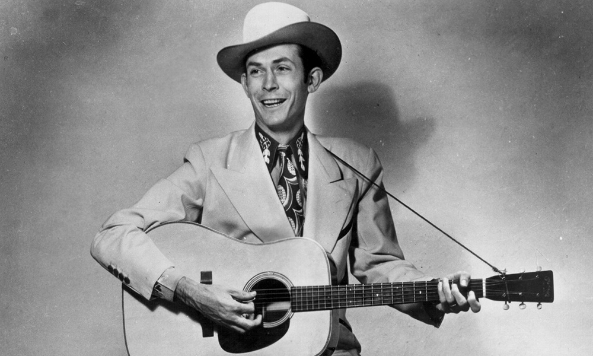

MUS 302 · What to Listen for in Music
Module 1: Orientation and Methodology · Listening Guide · Track 4 of 4
Track 4 Hank Williams, "I'm So Lonesome I Could Cry" (1949)

Context
Williams before the song
Hiram King "Hank" Williams was born September 17, 1923, in Mount Olive, Alabama, the son of a logger who would soon enter a Veterans Administration hospital and largely disappear from his children's lives. His mother Lillie ran rooming houses and moved the family between Mount Olive, Georgiana, Greenville, and eventually Montgomery in pursuit of work. Williams was born with , a congenital spinal condition that caused him chronic back pain throughout his life and would eventually contribute to the alcohol and morphine dependencies that killed him at twenty-nine. He bought his first guitar from his mother for $3.50 on installment, and he learned to play by attaching himself to a Black street musician named Rufus Payne, who went by the nickname Tee Tot.
Williams started performing on local Alabama radio at thirteen. He won a 1937 talent contest at the Empire Theater in Montgomery that got him a regular slot on the WSFA radio station. He formed his first version of the in 1938. He spent the war years working in shipyards in Mobile, Alabama, and Portland, Oregon, occasionally returning to performing. In 1944 he married Audrey Sheppard, who became his manager and frequent vocal partner. She was an ambitious woman with limited musical talent and a turbulent personal life with him, and she was central to his career until their divorce in May 1952. In 1946, Audrey insisted they go to Nashville to meet the music publisher Fred Rose at the recently formed firm . Rose became Williams's effective producer, songwriting collaborator, and business mind. Williams signed with in 1947. By 1949 he was a national star: "Lovesick Blues" reached number one on the country chart and stayed there for sixteen weeks, and Williams joined the , where he performed an unprecedented six encores of the song on his debut. He had no fewer than seven country hits in 1949, of which "I'm So Lonesome I Could Cry" would be one.
Tee Tot
Williams's musical inheritance came from two sources he was open about. The poetic structure of his songs (their image-driven verses, their natural-world metaphors) came from the that came down through and the rural South, the inheritance of his Welsh, Scotch-Irish, and English ancestors. The blues phrasing in his voice (the way he bent and lingered on notes, the way he let his voice catch) came from his teenage apprenticeship with , an African American street musician.
Payne was born in 1884 on the Payne Plantation in Sandy Ridge, Lowndes County, Alabama. His family moved to New Orleans when he was six, and there he learned guitar, blues, and jazz. He returned to Alabama in 1915 and worked as an itinerant performer, playing in clubs, juke joints, and on the streets of small Alabama towns including Greenville, Georgiana, and Montgomery. According to Alabama blues historian Alice Harp, who tracked down the location of Payne's grave in 1999, Payne played both for Black audiences and at the homes of well-to-do white families, who hired him for tea parties and social events.
Around 1933, when Williams was about ten years old, Payne and the Williams family met in Georgiana, where Williams's mother was running a boarding house and Payne was performing on the street. Williams started following Payne around, persuading him to teach him guitar. The arrangement that emerged was specific to its time and place: Williams's mother fed Payne in exchange for the lessons, and the two of them sat under the high front porch of the Williams house, out of public sight. Leona Simmons, a local historian at the Hank Williams Museum in Georgiana, told the Alabama Press-Register: "Whites didn't follow blacks around then. It just wasn't done. That's why they ended up under the house. He was hiding out." The lessons covered chords, rhythm, bass turns, and the blues phrasing that would become a permanent feature of Williams's voice. In 1937 Payne moved to Montgomery at Williams's suggestion. He died there at a charity hospital on March 17, 1939, at age fifty-six. Williams, a teenager by then, did not learn of his death. When Williams returned to Greenville in 1951 for a concert and tried to find his old teacher, friends told him Payne had been dead for twelve years. Payne was buried in an unmarked grave. Williams told the Montgomery Advertiser that year that Payne had given him "all the music training I ever had."
Country music's history is rarely told this way. The standard narrative of country music as the music of the rural white South often elides the central role of Black musicians like Tee Tot, of figures like DeFord Bailey (the first Black star of the Grand Ole Opry), of the constant musical exchange between Black and white communities in the same Southern towns. Williams's open acknowledgment of his debt to Payne is itself unusual in mid-century country music, where the blues-derived elements of the music were often performed without attribution to their source. When you hear Williams sing "I'm So Lonesome I Could Cry," you are hearing both traditions in him at once: the imagery is Anglo-Celtic, the phrasing is Black Southern blues, and they have been folded together so completely that you cannot separate them.
The recording
Williams recorded "I'm So Lonesome I Could Cry" on August 30, 1949, at E.T. Herzog Recording Studios in Cincinnati, Ohio. The session musicians were not the Drifting Cowboys but a group of studio professionals associated with the Pleasant Valley Boys: Zeke Turner on lead electric guitar, Jerry Byrd on , Louis Innis on rhythm guitar, Tommy Jackson on , and Ernie Newton on upright bass. Williams played acoustic guitar and sang. The recording has no drums.
According to Colin Escott's 1994 biography Hank Williams, Williams had originally written the song to be recited rather than sung, in the style of his alter ego , a pseudonym MGM used for his moralistic spoken-word recordings. Williams thought the song was "too genteel" to set to music. Friends and fellow musicians convinced him otherwise. The arrangement at Herzog Studio was deliberately sparse to preserve the spoken-word weight of the lyrics: Byrd's steel guitar and Jackson's fiddle each play simple, mournful lines that paraphrase the vocal melody, leaving large amounts of space around Williams's voice. Escott described Byrd's solo as "of unusual simplicity, paraphrasing the melody to haunting effect, subtly adjusting tone and volume."
Williams's marriage to Audrey was disintegrating during the period he wrote the song, and biographers have generally agreed that the song's sense of hopeless loneliness draws on the personal turmoil of that relationship. The song is in slow waltz time (3/4), and structured as three verses without a chorus, each verse using a similar pattern of nature imagery (a whippoorwill, the moon, a falling star, a robin) to mirror an interior emotional state.
The single, the death, the afterlife
MGM released "I'm So Lonesome I Could Cry" in November 1949 as the of "My Bucket's Got a Hole in It," reportedly because operators preferred uptempo songs and a slow ballad would be wasted on the A-side. The single was a success: "My Bucket's Got a Hole in It" reached number two on the Billboard country chart. "I'm So Lonesome I Could Cry" did not chart on its own, but it became, by far, the more famous of the two songs over the decades that followed.
Williams's life accelerated toward catastrophe. His back pain led to a deepening dependence on alcohol and morphine. The Grand Ole Opry fired him in August 1952 for habitual drunkenness. Audrey divorced him three months earlier. He married Billie Jean Jones in October 1952. On the night of December 30, 1952, after a doctor in Knoxville injected him with vitamin B12 and morphine and he had been drinking heavily, Williams climbed into the back seat of a powder-blue 1952 Cadillac to be driven by an eighteen-year-old chauffeur named Charles Carr to a New Year's Day concert in Canton, Ohio. He never woke up. Williams was officially declared dead at 7:00 a.m. on January 1, 1953, in Oak Hill, West Virginia, of heart failure. He was twenty-nine years old.
The song's afterlife is enormous. It has been recorded by hundreds of artists, including Elvis Presley (who introduced it during his 1973 Aloha from Hawaii television special as "probably the saddest song I've ever heard"), Johnny Cash and Nick Cave (a 2002 duet on American IV: The Man Comes Around), B.J. Thomas (whose 1966 cover reached number eight on the pop chart), Al Green, the Everly Brothers, k.d. lang, Townes Van Zandt, and many others. Bob Dylan, in his autobiography Chronicles, Volume One, wrote about hearing Williams as a young teenager: "Even at a young age, I identified with him. I didn't have to experience anything that Hank did to know what he was singing about. I'd never heard a robin weep, but could imagine it and it made me sad." Williams was inducted into the inaugural class of the in 1961. In 2010, the Pulitzer Board awarded him a for songwriting. Rolling Stone ranked "I'm So Lonesome I Could Cry" number 111 on its list of the 500 Greatest Songs of All Time, the second-oldest song on the list.
Things to listen for
First, the timbre of Williams's voice. There is a catch in it, a kind of cry built into the sound. It is not a polished voice. The roughness is part of the meaning. Listen for how he holds notes and lets them break. Compare this with the way Cooke uses vocal grain in "A Change Is Gonna Come." Cooke is gospel-trained: his break is theatrical, controlled, allowed to happen at specific moments. Williams's break is constant, woven into the basic sound of his voice. Different traditions, different relationships to vulnerability.
Second, the texture is among the thinnest you will hear in this course. Voice, steel guitar, fiddle, light rhythm guitar and upright bass. No drums. No piano. That sparseness is not a limitation; it is a choice. The space around the voice is part of the song. Compare this with the dense salsa texture of "Quimbara." Two opposite uses of the band: in Cruz's recording, the band is the message; in Williams's, the band is what gives the singer room to be heard.
Third, the form. Three verses, no chorus. Just images of loneliness, accumulating. You saw this shape in the methodology reading as Figure 2: A, A, A. The form is the loneliness. There is no relief built into the structure, no chorus to go home to. Notice how that affects you as you listen. Notice also the slow waltz time (3/4), which is unusual in popular music and gives the song a hesitant, almost stumbling rhythmic feel.
Fourth, the gesture: listen for moments where Jerry Byrd's steel guitar answers Williams's vocal line, almost like a second voice. That call-and-response between voice and steel guitar is part of what makes country music sound the way it does. The steel guitar in this song is doing some of the work that an orchestra does in Cooke's recording: filling space, commenting on the singer, creating the sense of an environment around the voice.
Reflective question
Williams's phrasing is shaped by the blues, which he learned from a Black musician named Tee Tot. His poetic vocabulary is shaped by older Anglo-Celtic ballad traditions. The song you are hearing is American because both of those traditions met in him. How does knowing this change what you hear, if at all? What do you make of the fact that country music's history is rarely told this way, that the contributions of figures like Tee Tot are often left out of the story even when the music itself carries those contributions forward?
Sources for this section
Escott, Colin. Hank Williams: The Biography. Little, Brown, 1994 (revised edition 2004). The standard biography, drawing on extensive interviews with people who knew Williams.
Momodu, Samuel. "Rufus 'Tee Tot' Payne (1884–1939)." BlackPast.org. Scholarly biographical entry on Payne by a historian, with extensive citations.
Greenville Advocate. "Tee-Tot a mentor to legendary musician." May 12, 2017. Local Alabama coverage of the Payne story, citing Alabama blues historian Alice Harp.
Alabama Press-Register. "Hank Williams mentor buried in obscure grave." August 10, 2006. Includes interviews with Hank Williams Museum staff in Georgiana.
Wikipedia. "I'm So Lonesome I Could Cry." Heavily sourced article on the song, drawing on Escott's biography and contemporary recording session documentation.
Wikipedia. "Hank Williams" and "Death of Hank Williams." Drawing on multiple biographical sources, useful for cross-checking dates and events.
Britannica. "Hank Williams." Standard encyclopedic biography by Jeff Wallenfeldt.
Hank Williams Museum, Montgomery, Alabama. Online biographical materials, accessed at thehankwilliamsmuseum.net.
Dylan, Bob. Chronicles: Volume One. Simon & Schuster, 2004. Source for the Dylan quotation on hearing Williams as a young listener.